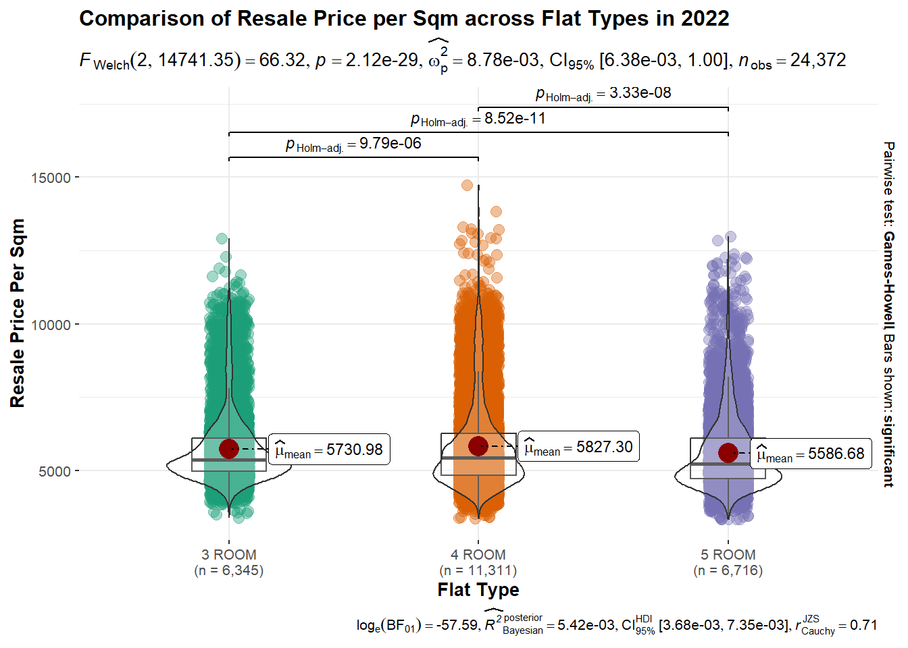

Show the code
pacman::p_load(ggstatsplot,tidyverse,gganimate,performance, ggdist,highcharter,patchwork)The task is to reveal the patterns of resale prices of public housing property in 2022 by residential towns and estates in Singapore. The intention is to help the users to have better data discovery experience by using relevant interactive visualisation techniques.
The raw data is downloaded from Resale flat princes based on registration date from Jan-2017 onwards from Department of Statistics, Singapore. The data is cleaned up to focus on resale prices of 3/4/5 Room in 2022 before importing.
Install and load all the relevant libraries to use for visualization.
pacman::p_load(ggstatsplot,tidyverse,gganimate,performance, ggdist,highcharter,patchwork)Raw data is imported from resaleFlatPrices2022.csv and put into resaleFlatRaw data frame.
resaleFlatRaw <- read_csv("data/resaleFlatPrices2022.csv",show_col_types = FALSE) After the raw data is imported, all the number variables are converted into integers type so the statistical analysis can be applied to them. Data conversion of years to months is also done for remaining_lease variable. The resale_price_sqm variable is created to do better comparison between different flat types.
First the remaining_lease column is extracted into remaining_lease_year and remaining_lease_month and converted into integer variables. Next, the NA is replaced with 0 for remaining_lease_month. Lastly, remaining_lease_months variable is created by adding up remaining_lease_year and remaining_lease_month into months.
resaleFlat <- resaleFlatRaw %>%
mutate(resale_price=as.integer(resale_price)) %>%
mutate(floor_area_sqm=as.integer(floor_area_sqm)) %>%
mutate(resale_price_psm = resale_price/floor_area_sqm) %>%
extract(remaining_lease,c("remaining_lease_year","remaining_lease_month"),
"([0-9]{2}) years ?([0-9]{2})?",convert=TRUE) %>%
mutate(remaining_lease_month=replace_na(remaining_lease_month,0)) %>%
mutate(remaining_lease_months=(remaining_lease_year*12)+remaining_lease_month) %>% select(-c(remaining_lease_year,remaining_lease_month))The 1st visualisation is to display the mean resale price per sqm for individual town so that the user can determine the mean resale price fluctuation across towns. The final visualisation is sorted in ascending order for mean resale price per sqm.
options(highcharter.theme = hc_theme_smpl(tooltip = list(valueDecimals = 2)))
resaleFlatmean <- resaleFlat %>% group_by(town) %>%
summarise(mean_resale_price_psm = mean(resale_price_psm))
resaleFlatmeanSorted = resaleFlatmean[order(resaleFlatmean$mean_resale_price_psm),]
hc <- resaleFlatmeanSorted %>%
hchart('column', hcaes(x = town, y = mean_resale_price_psm)) %>%
hc_title(text="HDB Mean Resale Price Per Sqm in 2022", align = "center")
hcBased on the bar chart above, it can be observed that central area has highest mean resale price per sqm while woodlands area ha s lowest mean resale price per sqm. It can deduced from the chart that most of the central region planning areas have higher mean resale price per sqm compared to other regions.
The 2nd visualisation is to investigate whether mean resale price per sqm in 2022 is increased from mean resale price per sqm in 2021 which is $4,839 according to the MND. So, this is the test.value that will be used.
p1 <- gghistostats(data = resaleFlat, x = resale_price_psm,
xlab = "Resale Price Per Sqm",
title = "Distribution of Resale Price Per Sqm for HDB in 2022",
test.value = 4839,
centrality.parameter = "mean")
p1As you can see from the graph above, the mean value of resale price per sqm in 2022 is significantly higher than the mean value of resale price per sqm in 2021. There is also extreme evidence provided by Bayes factor that the mean resale price per sqm in 2022 is higher compared to 2021.
The 3rd visualisation is compare the mean resale price per square meter for different flat types. It is also to check that the differences in mean resale price per sqm between flat types is statistically significant or not.
ggbetweenstats(
data = resaleFlat,
x = flat_type,
y = resale_price_psm,
type = "p",
mean.ci = TRUE,
xlab = "Flat Type",
ylab = "Resale Price Per Sqm",
title = "Comparison of Resale Price per Sqm across Flat Types in 2022"
)
From the above chart, the mean resale price per sqm across flat types across different flat types is comparable to one another. Moreover, the distribution pattern across different flat type is similar.
The 4th visualisation is to reveal the relationship between resale price per square meter and floor area in square meter.To do the visualisation, resale price per sqm and floor are in sqm are binned 4 bins.
resaleFlat1 <- resaleFlat %>%
mutate(resale_price_psm_bins = cut(resale_price_psm, breaks = c(0,3333,6183,9033,11883,14733))) %>%
mutate(floor_area_sqm_bins = cut(floor_area_sqm, breaks = c(0,30,60,90,120,160)))
ggbarstats(resaleFlat1,
x = resale_price_psm_bins,
y = floor_area_sqm_bins,
xlab = "Resale Price per Sqm",
ylab = "Floor Area Sqm",
legend.title = "Resale Price per Sqm Bins",
title = "Resale Price per Sqm vs Floor Area Sqm")
From the resulting chart, it can be seen that most of the 30-60 sqm and 120-160 sqm of floor area are sold at lower resale price per sqm compared to 60-120 sqm of floor area. The highest resale price per sqm for 120-160 sqm of floor area is between $6183 and $9033 while The highest resale price per sqm for other floor area is between $9033 and $11883 It can be deduced that resale price per sqm for smaller room can be higher than the bigger room.
Multiple Linear Regression Model
The multiple linear regression model is applied for resale price with different parameters such as flat model, storey range and so on.
model <- lm(resale_price_psm ~ month + town + storey_range +
floor_area_sqm + flat_model + remaining_lease_months, data = resaleFlat)
model
Call:
lm(formula = resale_price_psm ~ month + town + storey_range +
floor_area_sqm + flat_model + remaining_lease_months, data = resaleFlat)
Coefficients:
(Intercept) month2022-02
1718.924 40.341
month2022-03 month2022-04
72.452 148.689
month2022-05 month2022-06
181.689 251.271
month2022-07 month2022-08
295.773 306.500
month2022-09 month2022-10
386.920 438.789
month2022-11 month2022-12
453.446 490.672
townBEDOK townBISHAN
-280.283 784.252
townBUKIT BATOK townBUKIT MERAH
-864.458 1003.111
townBUKIT PANJANG townBUKIT TIMAH
-1435.395 1538.595
townCENTRAL AREA townCHOA CHU KANG
1394.661 -1665.866
townCLEMENTI townGEYLANG
240.825 355.438
townHOUGANG townJURONG EAST
-827.032 -921.221
townJURONG WEST townKALLANG/WHAMPOA
-1330.377 681.763
townMARINE PARADE townPASIR RIS
1318.809 -962.931
townPUNGGOL townQUEENSTOWN
-1445.643 1093.563
townSEMBAWANG townSENGKANG
-1594.610 -1521.392
townSERANGOON townTAMPINES
29.056 -504.296
townTOA PAYOH townWOODLANDS
493.312 -1543.226
townYISHUN storey_range04 TO 06
-1189.617 185.602
storey_range07 TO 09 storey_range10 TO 12
339.910 419.979
storey_range13 TO 15 storey_range16 TO 18
523.890 739.191
storey_range19 TO 21 storey_range22 TO 24
1025.045 1164.541
storey_range25 TO 27 storey_range28 TO 30
1384.468 1761.702
storey_range31 TO 33 storey_range34 TO 36
1885.688 2026.521
storey_range37 TO 39 storey_range40 TO 42
2207.980 2450.416
storey_range43 TO 45 storey_range46 TO 48
2662.916 3437.031
storey_range49 TO 51 floor_area_sqm
2908.513 -6.039
flat_modelAdjoined flat flat_modelDBSS
174.458 1322.658
flat_modelImproved flat_modelImproved-Maisonette
52.275 1647.555
flat_modelModel A flat_modelModel A-Maisonette
33.494 1145.945
flat_modelModel A2 flat_modelNew Generation
78.316 232.176
flat_modelPremium Apartment flat_modelPremium Apartment Loft
258.855 981.651
flat_modelSimplified flat_modelStandard
395.000 157.229
flat_modelTerrace flat_modelType S1
4035.515 2062.109
flat_modelType S2 remaining_lease_months
1950.796 5.038 Next step is to check the multicollinearity of different parameters to resale price.
check_c <- check_collinearity(model)
check_c# Check for Multicollinearity
Low Correlation
Term VIF VIF 95% CI Increased SE Tolerance
month 1.03 [1.02, 1.05] 1.02 0.97
floor_area_sqm 1.46 [1.44, 1.48] 1.21 0.69
remaining_lease_months 2.47 [2.42, 2.52] 1.57 0.41
flat_model 8.75 [8.55, 8.96] 2.96 0.11
Tolerance 95% CI
[0.95, 0.98]
[0.67, 0.70]
[0.40, 0.41]
[0.11, 0.12]
Moderate Correlation
Term VIF VIF 95% CI Increased SE Tolerance Tolerance 95% CI
storey_range 1.93 [1.90, 1.97] 1.39 0.52 [0.51, 0.53]
town 6.81 [6.65, 6.97] 2.61 0.15 [0.14, 0.15]plot(check_c)From the plot, it is illustrated that flat model and town plays more significant role to resale price per square meter while the rest of the parameters has less significant role.
Next is checking normality of residuals for the model.
check_n <- check_normality(model)
plot(check_n)
From the plot it can be said that the the model residual failed to conform to normality assumption because residual histogram (in cyan colour) is not closed to the theretical histogram (i.e in green).
Visualizing the Uncertainty of Point Estimates
This visualisation is to display the distribution of resale price per sqm by flat model.
resaleFlat %>% ggplot(aes(x = flat_model,
y = resale_price_psm)) +
stat_gradientinterval(
fill = "skyblue",
show.legend = TRUE
) +
labs(
title = "Visualising confidence intervals of resale price per sqm of HDB in 2022",
subtitle = "Gradient + interval plot") +
xlab("Flat Model") + ylab( "Resale Price per Sqm") +
theme(plot.title = element_text(size=16, hjust=0.5),
axis.title.x = element_text(size=15),
axis.text.x = element_text(angle=45, hjust=1),
axis.title.y = element_text(size=15)) The confidence interval for different flat type is more or less similar to each other. Type S1 and S2 has higher resale price per sqm compared to the rest.
Take-home exercise 3 can help me to familiarize with different analytics approach for statistical testing, building the linear regression model and visualising uncertainty. It also introduce me different librares and functions for visualisation and statistical analysis.